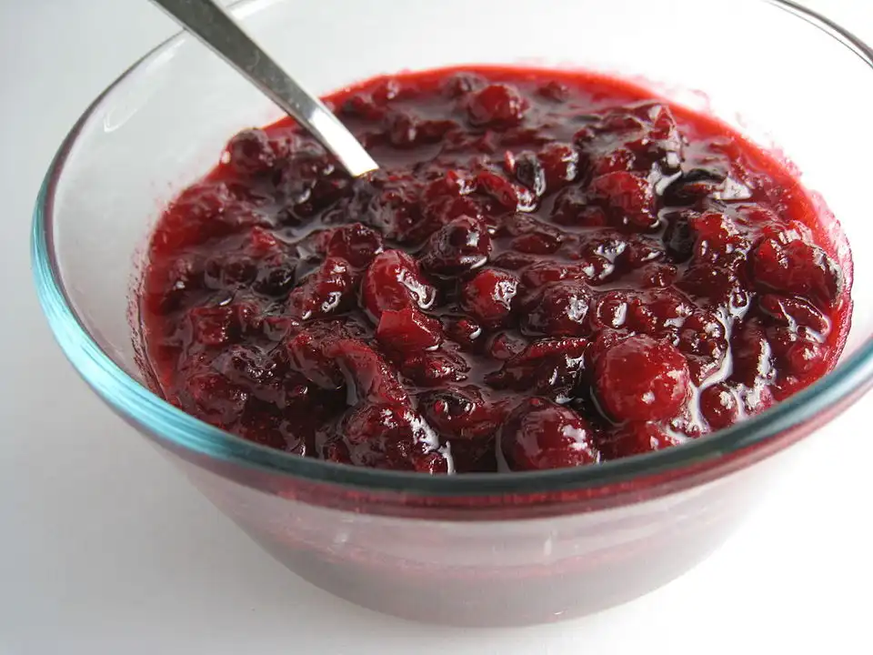

Cranberry Sauce Recipe

Description
This classic cranberry sauce recipe combines fresh cranberries, sugar, and
orange juice for a quick and easy side that adds a burst of tangy flavor
to your Thanksgiving holiday meal.
Ingredients
- 12 ounces cranberries
- 1 cup white sugar
- 1 cup orange juice
Steps
- Gather all ingredients.
-
Dissolve sugar in orange juice in a medium saucepan over medium heat.
-
Stir in cranberries and cook until they start to pop and sauce starts to
thicken, about 8 to 10 minutes.
-
Remove from heat and place sauce in a bowl. The sauce will continue to
thicken as it cools.Remove from heat and place sauce in a bowl. The
sauce will continue to thicken as it cools.
- Enjoy!
HOME